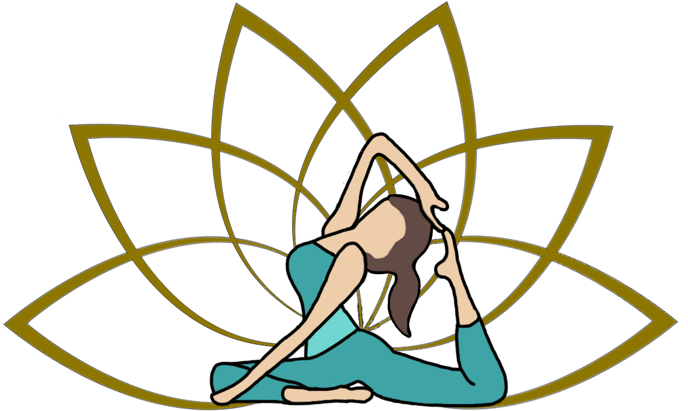

Mais informações sobre a auriculoterapia...
Pilates é um conjunto de exercícios que são realizados no solo ou em equipamentos exclusivos, que visa o total e completo controle e conexão entre corpo e mente, devolvendo e restaurando a saúde de indivíduos em condições patológicas, assim como promovendo um aumento da qualidade de vida para pessoas saudáveis.
Melhora da postura
A consciência corporal obtida com o pilates e o foco nos músculos do centro do corpo (conhecidos como core) fazem com que as curvas naturais da coluna sejam respeitadas, o que melhora a postura. Com isso, o exercício pode reduzir dores nas costas.
Aumento do tônus muscular
Os exercícios do pilates trabalham com a contração e força dos músculos, além de sua flexibilidade. Com isso, as fibras musculares são rompidas e reconstruídas, possibilitando a troca de massa gorda por muscular e um melhor contorno corporal, com redução de medidas.
Maior mobilidade articular
Como os exercícios trabalham o corpo de forma global, as articulações também são estimuladas, o que torna o corpo mais móvel e facilita os movimentos do dia a dia.
Alívio de tensões
Por focar na respiração e na concentração na hora de executar um movimento, o pilates pode ajudar na redução do estresse. Esse benefício é incrementado pelo ambiente em que o exercício é realizado: normalmente salas tranquilas e com som ambiente agradável e calmo.
Evolução da marcha e corrida
Como movimentos globais são estimulados durante o pilates, isso faz com que movimentos comuns, como a caminhada, se tornem mais simples e melhor executados. Além disso, por meio da reeducação da respiração e da concentração adquiridas no método, correr pode se tornar uma atividade mais prazerosa e com resultados mais rápidos. A consciência corporal desenvolvida no pilates auxilia o equilíbrio do corredor e o alinhamento do corpo.
Incremento da flexibilidade
Os exercícios voltados para este benefício são aqueles que enfatizam o alongamento global do corpo. Trabalhando a extensão de músculos e articulações, percebemos mudanças positivas em atividades como amarrar os sapatos e vestir as calças, por exemplo.
As abordagens da Quiropraxia, ao realinharem a coluna vertebral e promoverem manobras nas articulações, aliviam a tensão muscular e a pressão sanguínea no local. Os resultados trazem alívio da dor e resgate da mobilidade e normalidade dos movimentos pelo paciente.
Mas, não se trata apenas de alívio na dor. Veja a seguir os principais benefícios alcançados com as sessões de Quiropraxia.
Alívio da dor
Diferentes dores podem estar relacionadas às condições da coluna vertebral, especialmente em situações de ergonomia deficitária. Suas causas podem e devem ser tratadas. As abordagens quiropráticas são importantes aliadas na construção de qualidade de vida, promovendo o alívio da dor, em especial àquelas associadas à coluna.
Melhora no desempenho
Além de ser estressante, o mal-estar provocado por dores e incômodos, sobretudo aqueles com origens nas posturas, costuma ser um grande redutor do desempenho profissional. O tratamento proporcionado pela Quiropraxia, e a sensação de bem-estar que ela promove, resulta em melhoria nos resultados do trabalho.
Diminuição do uso de medicamentos
Com o alívio da dor, o consumo de medicamentos é reduzido consideravelmente. Além dessa consequência do tratamento quiroprático, existe também uma melhora acentuada na autoestima do paciente, que se vê livre da dependência anterior do consumo de remédios para dor.
Resultados rápidos
Embora alguns tratamentos sejam concluídos com mais tempo de prática, a Quiropraxia ganha adeptos especialmente pelas respostas rápidas que ela oferece. As sessões empregadas não são demoradas e o alívio da dor chega quase instantaneamente, atendendo às necessidades de casos urgentes.
Melhoria na saúde mental
O realinhamento da coluna vertebral pode trazer benefícios para a saúde mental. Além disso, é importante levar em conta que a convivência com a dor é um poderoso agente estressor, o que pode dificultar o bem-estar no cotidiano e desenvolver o sentimento de ansiedade e até quadros depressivos.